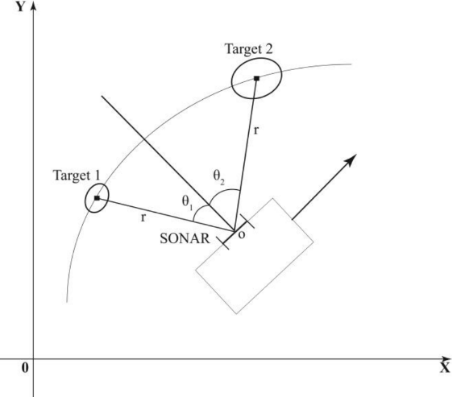
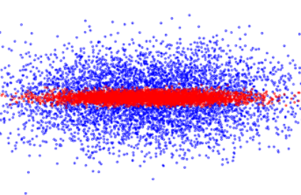
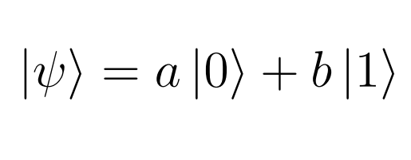
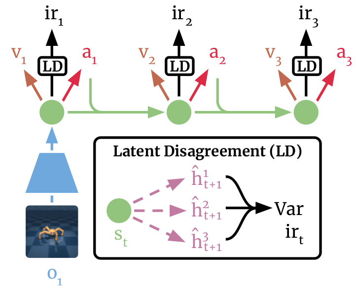
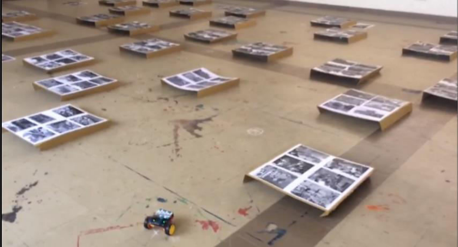

|
I am a Robotics Master's student at the GRASP Lab at the University of Pennsylvania. I am advised by Kostas Daniilidis, and work with his research group. I am broadly interested in problems at the intersection of Deep Learning and Robotics, and problems in Reinforcement Learning. I received my Bachelor's degree in Electrical Engineering at Anna University in India, with my Senior Project advised by Ranganath Muthu. I have spent time as a Research Intern with P.V.Manivannan at IIT Madras, and as a Research Fellow with Urbasi Sinha at Raman Research Institute. I have also spent time at Qualcomm R&D working on using Deep Learning for error-correction codes. |
{kind=link}
 |
|
 |
workshop page |
pdf |
We learn a latent variable model for dynamics of image observations, and use it to construct an agent that maximizes Bayesian surprise of the future frames. The Bayesian agent can perform exploration that is more robust in stochastic environments than simpler prior prediction schemes. |
|  |
conference |
pdf |
code |
We mathematically analyze the correlations that arise between measurement parameters. This is done by understanding the geometrical transformations that a data point undergoes when correlations are determined between normally distributed measurement parameters. We use this understanding to develop a new algorithm for the discrete Kalman Filter |
|  |
conference |
pdf |
We propose a solution to reduce the range and bearing error significantly, and thus improve the performance of the SONAR. Using the results from the Gaussian Correlation Inequality, we derive probabilistic transformations that can improve the range and bearing measurement of the SONAR, thus reducing the sensor error. |
|  |
pdf |
QKD, a sub-topic of quantum cryptography, stands strong in its security only bounded by the laws of physics, meaning no matter how ad- vanced the technology gets, what is prohibited will be prohibited. This report outlines the fundamentals of the BB84 scheme and its problems, how the decoy state idea proved to be a worthy solution, along with some mathematical background and two important experimental milestones |
|  |
pdf |
Thesis Talk |
This work focuses on task-agnostic exploration, where an agent explores a visual environment without yet knowing the tasks it will later be asked to solve. |
|  |
pdf |
presentation |
This project work is an implementation of a collaborative robot system that help overcome the challenges in disaster rescue, where there is a focus on the application of autonomously searching and rescuing people in disaster zones such as earthquakes with unmanned aerial vehicles (UAV) and unmanned ground vehicles (UGV) in unknown and unstructured environments |